Key to infraorders of Brachycera
1.
- Wing well-developed, longer than thorax.
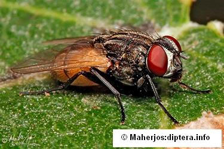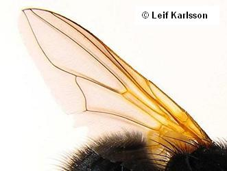
2
- Wing absent or greatly reduced (usually shorter than thorax).
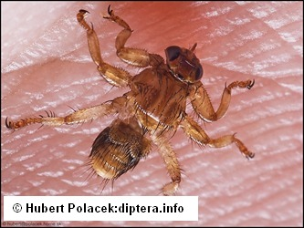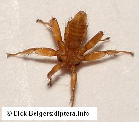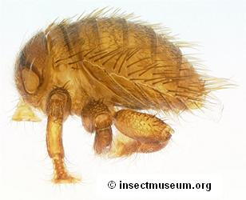
23
- Antennae with 10 to 35 flagellomeres (Rachiceridae), which are pectinate or serrate. Palpi two-segmented.

Xylophagomorpha
Xylophagoidea
Xylophagidae
Rachiceridae
- Antennae with at most 8 flagellomeres.


3
- Empodium in the form of pulvilli, i.e., 3 subequal pads below claws. Veins CuA2 and A1 separate, or meeting at an acute angle close to wing margin.
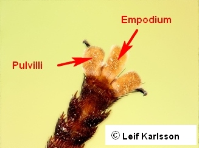
4
- Empodium bristle-like or not discernible, at most 2 well-developed pads below claws. Veins CuA2 and A1 variable. If empodium (secondarily, in some Empidoidea) pad-like, CuA2 and A1 meeting far from wing margin and not in an acute angle, and only 3 flagellomeres present in the form of a large first one and a two-segmented stylu.
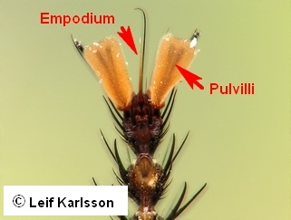
13
- Head comparatively small, eyes holoptic or almost so in both sexes. Thorax and abdomen greatly enlarged, calypters very large. Wing venation reduced in several genera. Flagellum mostly reduced.
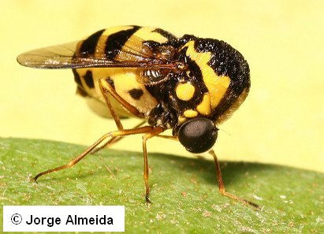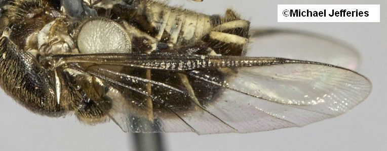
Asilomorpha
Nemestrinoidea
Acroceridae
- With other combination of characters: e.g., wing venation complete, and/or, flagellum not reduced. In questionable cases calypters never enlarged.
5
- Branches of R and M more or less converging to apex of wing: branches of M curving forward and ending before or scarcely behind apex of wing. A so-called diagonal vein present, consisting of parts of R2, M1, M2, M3 and CuA1. In cases several additional cells present in apical part of wing.
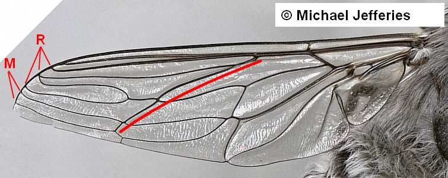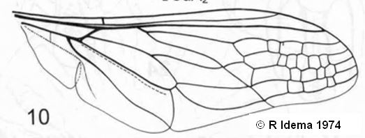
Asilomorpha
Nemestrinoidea
Nemestrinidae
- Wing venation otherwise.
6
- Costa usually ending well before, or rarely nearly at, wing apex. Branches of R in upper part of wing and all ending in costa well before wing apex. Anal cell always closed. Discal cell usually small.
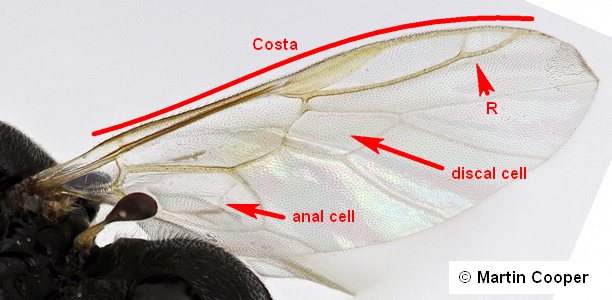
Stratiomyomorpha
Stratiomyoidea
- Wing venation different: costa continuing around wing; if ending near apex of wing, branches of R not crowding in upper part of wing, andlor discal cell larger.
7
- Alula reduced. Wing narrow. Abdomen long and thin, sides nearly parallel.
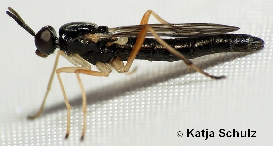
8
- Alula well-developed. Wing not conspicuously narrowed. Abdomen wider, at least so basall.
9
- Flagellum with 6 to 8 segments, which are more or less similar. Vein R2+3 never strongly curved toward wing margin, nor R4 and R5 strongly divergent.
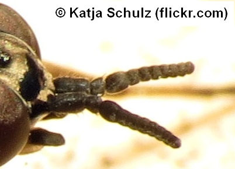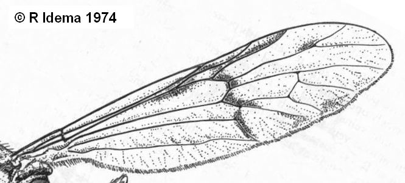
Xylophagomorpha
Xylophagoidea
Xylophagidae
- Flagellum with 6 or fewer segments, which are mostly not similar: second and other flagellomeres form a stylus. Vein R2+3 usually strongly curved toward wing margin, and R4 and R5 strongly divergent.
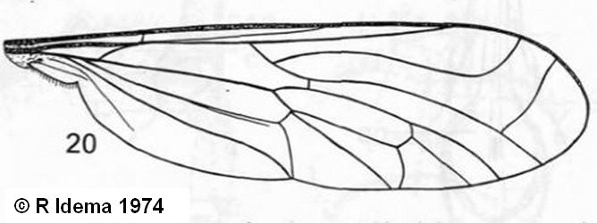
Vermileonomorpha
Vermileonidae
- Vein R1 and R2+3 ending together in costa above or distal to fork of R4+5. First flagellomere kidney-shaped.
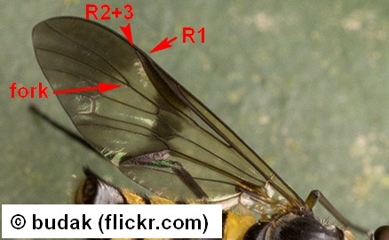
Tabanomorpha
Tabanoidea
Athericidae
- Vein R1 and R2+3 ending in costa separately. First flagellomere not reniform (or very rarely so, e.g., Symphoromyia, Rhagionidae).
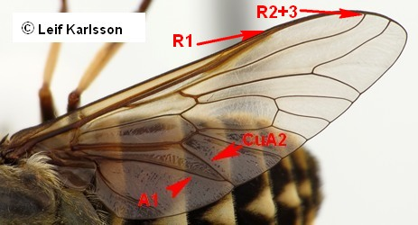
10
- Lower calypter strongly developed, much larger than upper calypter. Subscutellum large. Veins R4 and R5 divergent, the former ending before, the latter far behind tip of wing.
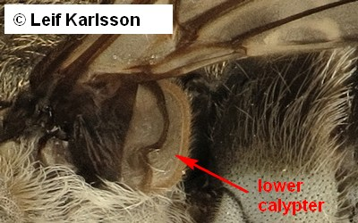
Tabanomorpha
Tabanoidea
Tabanidae
- Thoracic (lower) calypter not enlarged, other characteristics different.
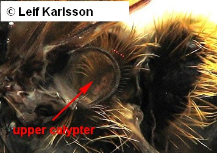
11
- Distal segments of flagellum definitely thinner than first flagellomere. That stylus (or "arista") always consists of fewer than 6 segments, which may be fused with each other and the first flagellomere in numerous cases. Subscutellum not developed, palpus two-segmented.
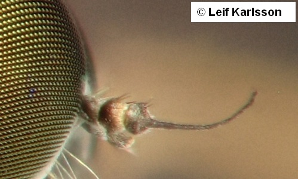
Tabanomorpha
Rhagionoidea
Rhagionidae
- Distal segments of flagellum less different from the first flagellomere, and the stylus consists of 7 to 8 segments. If distal segments form an arista (Dialysis), palpus one-segmented. Development of subscutellum variable.
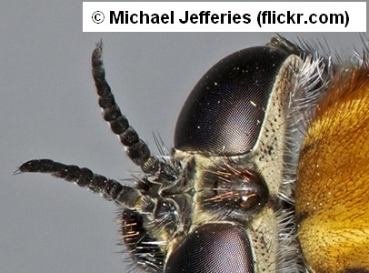
12
- The fork of radial veins R4 and R5 is over the discal cell; those two veins longer but less divergent. Subscutellum not discernible or small (in species of Arthropeas). Palpus one-segmented (two-segmented in species of Arthropeas).
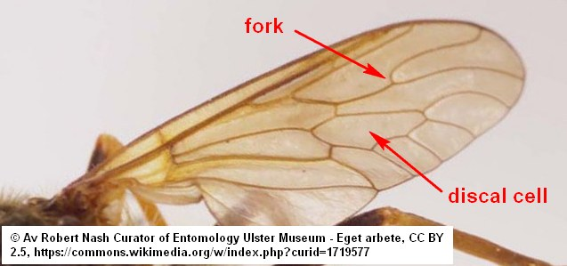
Xylophagomorpha
Xylophagoidea
Xylophagidae
Coenomyiidae
- The fork of radial veins R4 and R5 is distal to discal cell; those two veins short and usually strongly divergent. Subscutellum well-developed. Palpus twosegmented.
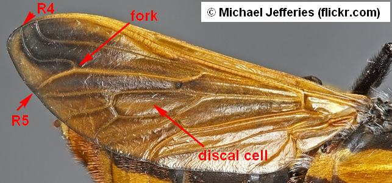
Tabanomorpha
Tabanoidea
Pelecorhynchidae
- Vein CuA2 long, reaching wing margin near A1, or joining A1 close to wing margin (at less than a quarter of its length back from the wing margin).
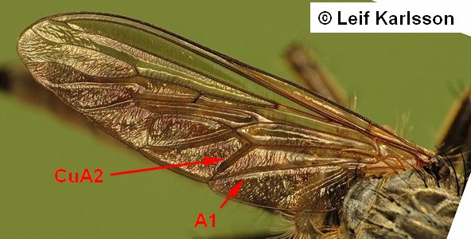
14
- Vein CuA2 absent, reduced, or joining A1 far from the wing margin (more than a quarter of its length back from the wing margin).
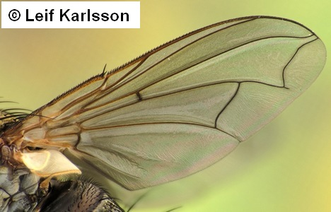
18
- Vein R2 and branches of M curved forward, at least one M vein ending freely in wing margin before wing apex; lower (cubital) half of wing usually with only 1 vein reaching wing margin (CuA2+Al). Antenna1 flagellum stalked, mostly elongate, with clubbed or peculiar apex.
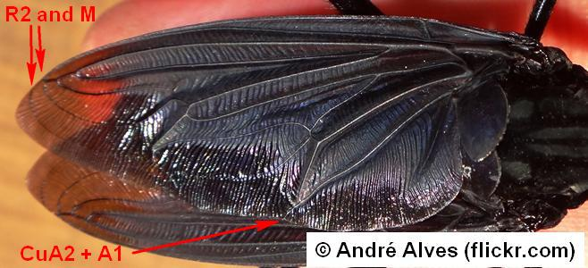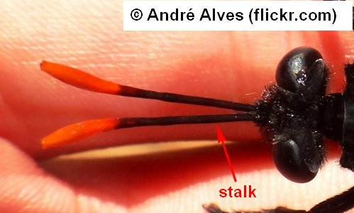
Asilomorpha
Asiloidea
Mydidae
- Branches of M not curved forward, but if forwardly bent then not ending freely in wing margin. Flagellum otherwise shaped.
15
- Vertex usually distinctly depressed between the eyes, ocellar triangle situated below the dorsal level of well-separated, bulging eyes. Head never subspherical, face relatively long, vertical, with long bristles. Proboscis strong: a stout, horny beak. Antennae usually set above centre of anterior surface of head. Costa continuing around wing, three M branches.
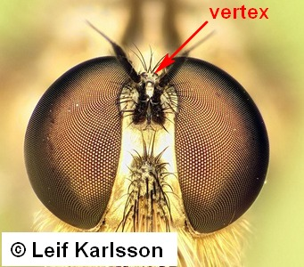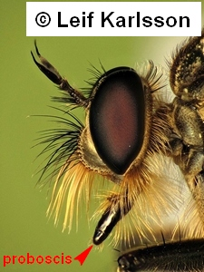
Asilomorpha
Asiloidea
Asilidae
- Vertex not depressed, or at most slightly so. Eyes often holoptic. Face usually short and receding, or sharply protruding.
16
- Vein M1 turned forwards to meet unforked R4+5. Wing usually with a vein-like fold or "vena spuria" between R2 and M, and/or terminal branches of M joining to form an ambient vein parallel to margin. Antennae with dorsal arista (except in a few wasp-mimicking genera).
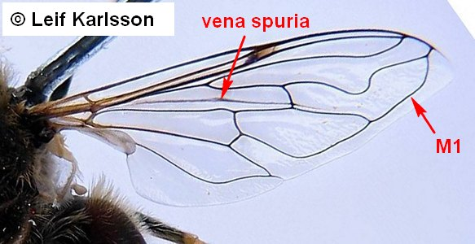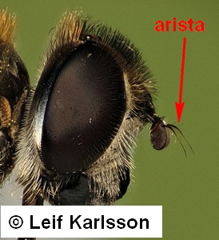
Muscomorpha
Aschiza
Syrphoidea
Syrphidae
- Wing venation different to that above, and/or antenna with terminal stylus.
17
- Head large and strongly hemispherical or even spherical, with compound eyes almost meeting sagittally both above and below antenna1 bases. Vein R4+5 unforked, costa ending at wing apex. Antenna with dorsal arista.
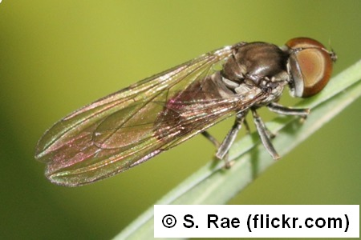
Muscomorpha
Aschiza
Syrphoidea
Pipunculidae
- Head usually not hemispherical. Veins R4 and R5 usually distinct ("R4+5 forked"), costa continuing around the wing. Antenna with terminal stylus (also in cases of some Bombyliidae, where head hemispherical).
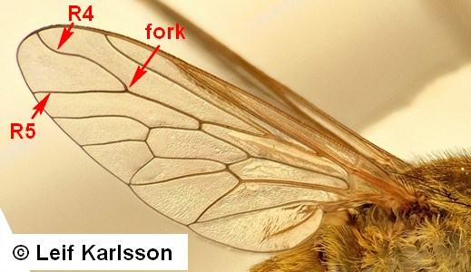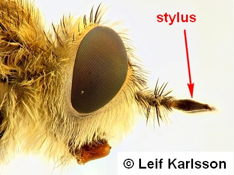
Asilomorpha
Asiloidea
- Antenna1 flagellum consists of the first flagellomere only (no stylus or arista, or sometimes bifid at tip with a very small, peg-like stylus. Crossvein R-M at or beyond middle of wing, vein CuA2 meeting A1 at 1/4 to 1/3 its length back from wing margin. Vein R4+5 branched into R4 and R5, M1 often curved forward to meet or approach R5.
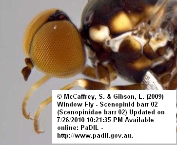
Asilomorpha
Asiloidea
Scenopinidae
- Antenna usually with an elongated stylus or arista. Crossvein R-M situated well before middle of wing or absent.
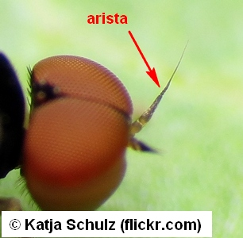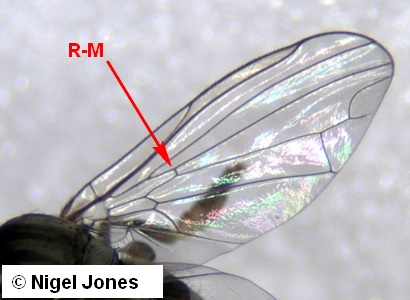
19
- Wing lanceolate or rather long and narrow, crossveins confined to base of wing. Costa continuing around wing. M1 and M2 form a long, more or less lanceolate fork. Arista apical or subapical.
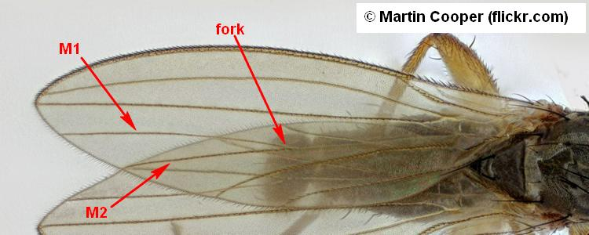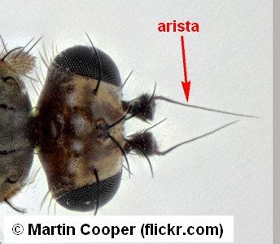
Muscomorpha
Aschiza
Platypezoidea
- Wing venation and other characteristics differen.
20
- R veins strongly thickened, terminating along with costa at about middle of anterior margin. Other veins much weaker, usually rather parallel, running obliquely across wing. Antenna apparently two-segmented, globular or discoid with dorsal arista. Head and palpi usually with strong, serrate bristles. Mostly hump-backed small flies with strong legs.
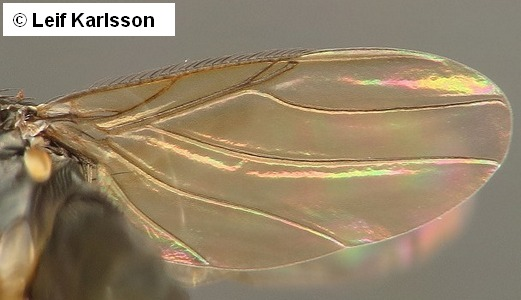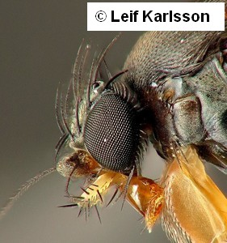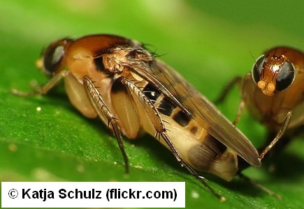
Muscomorpha
Aschiza
Platypezoidea
Phoridae
- Wing venation otherwise.
21
- Wing with both A1 and Sc reaching wing margin, and with cell cup acute at posterior apex. Vein M forked in several genera. Hind tarsus, at least in male, with one or more basal tarsomeres expanded and flattened. Arista three-segmented, terminally situated.
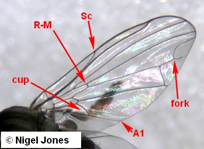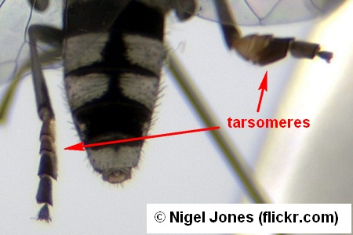
Muscomorpha
Aschiza
Platypezoidea
Platypezidae
- If A1 reaching wing margin, either Sc incomplete or cell cup obtuse or rounded at posterior apex, or cup very small. Vein M never forked. Hind tarsus not modified.
22
- Ptilinal suture and lunule absent. Flagellum composed of a large first flagellomere and usually two thinner flagellomeres ("aristomeres"). R4+5 forked or unforked.
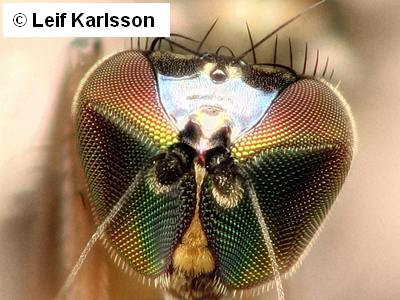
Asilomorpha
Empidoidea
- Ptilinal suture and lunule present. Flagellum composed of a large first flagellomere ("3rd antennal segment") and 3 thin flagellomeres, forming an arista. R4+5 not forked.
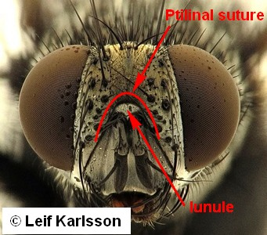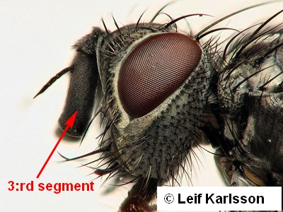
Muscomorpha
Schizophora
- Coxae of middle and mostly of hind legs widely apart. Tarsal claws strongly recurved and toothed. Ectoparasites of birds and mammals.
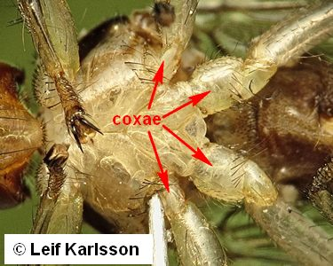
Muscomorpha
Schizophora
Calyptratae
Hippoboscoidea
- Coxae of middle and hind legs not distinctly separated. Tarsal claws simple.
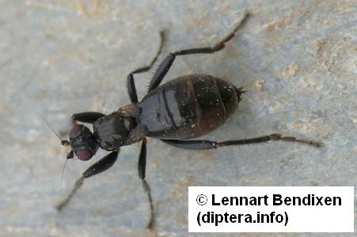
24
- Tarsal claws modified as inflexed combs of small teeth. Abdomen with pleurites. Thorax unusually short closely adjoining abdomen, scutellum absent.
Muscomorpha
Schizophora
Acalyptratae
Carnoidea
Braulidae
- Tarsal claws not modified, each tarsus with 2 simple claws. Abdomen without pleurites.
25
- Ptilinal fissure and lunule present.
Muscomorpha
Schizophora
Acalyptratae
- Ptilinal fissure and lunula absent.
26
- Antennae seemingly a single, mostly spherical first flagellomere and with a long three-segmented arista.
Muscomorpha
Aschiza
Platypezoidea
Phoridae, part
- Antennae consisting of three segments, i.e., a larger first flagellomere and only two "aris- tomeres".
27
- Proboscis elongate or even projecting. Vertex convex.
Muscomorpha
Schizophora
Acalyptratae
Sphaeroceroidea
Empididae, part
- Proboscis short. Vertex excavated.
Asilomorpha
Empidoidea
Dolichopodidae, part